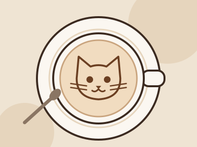
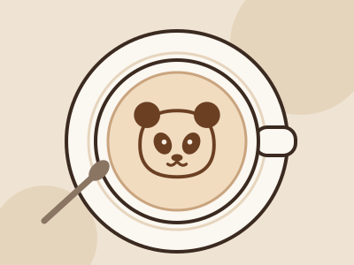
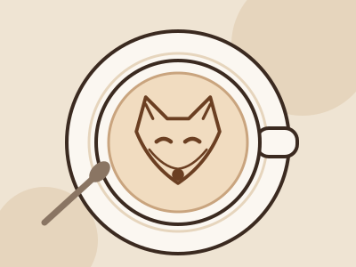
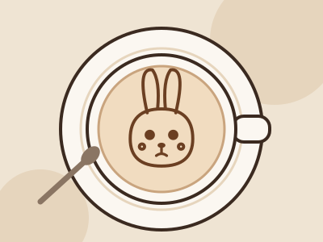
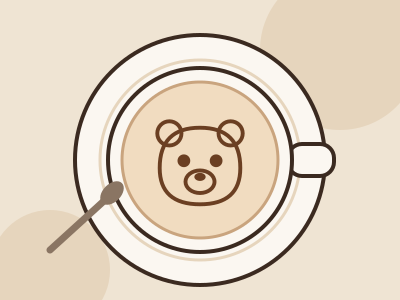

Лазерная гравировка
Как это работает и что можно «нарисовать»
1
Бариста готовит напиток с плотной молочной пеной.
2
Вы выбираете зверька из меню или показываете фото своего питомца.
3
Лазер карамелизует верхний слой пены — за 10 секунд, без вкуса гари.

Капучино «Котик»
Наш главный хит и символ кафе. Котик получается разным в каждой чашке — пена ведь живая.

Латте «Панда»
Самый «контрастный» рисунок: тёмные пятнышки лазер прожигает чуть глубже.

Раф «Лисёнок»
Хитрая мордочка на сливочной пене рафа. Новинка этого сезона.

Какао «Зайка»
Без кофеина — любимый напиток маленьких гостей.

Флэт уайт «Мишка»
Плотная тонкая пена — идеальный «холст» для круглой мордочки.
• • •
Цены на все напитки — в меню.